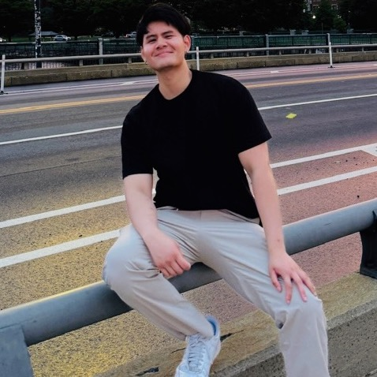

Incoming Ph.D. Student, Columbia University (Fall 2026)
Barry.Nguyen@ucsf.edu
Hey there! I am an incoming PhD student at Columbia University in the Disease and Therapeutics track, part of the broader Biomedical Life Sciences umbrella program. I received my B.S. in Biochemistry and Molecular Biology at UC Davis as a Regents and MARC scholar. After, I joined UCSF as a post-baccalaureate researcher.
I am interested in the pathobiology that underlies age-related diseases such as Alzheimer's disease and age-related macular degeneration. In particular, I seek to (1) identify the genetic networks that confer increased cellular resilience or susceptibility to such diseases, and using those insights (2) develop therapeutic strategies to preserve tissue function in hopes of extending healthspan and improving quality of life.
Throughout my academic and research journey, I have been blessed with amazing mentors. I recognize that many students don't have access to similar resources. I am open to mentoring individuals at all levels on topics including (but not limited to) securing post-bacc or undergraduate research positions, graduate school applications, and research fellowships. Please use my Calendly to schedule a meeting!
I am also open to discussing all things science and potential collaborations. Please feel free to schedule a meeting.